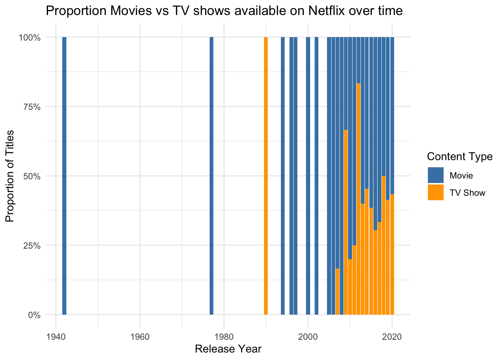

Code
library(tidyverse)
library(readr)
netflix_titles <- read_csv('https://raw.githubusercontent.com/rfordatascience/tidytuesday/main/data/2021/2021-04-20/netflix_titles.csv')
netflix <- netflix_titlesThe dataset used in this analysis comes from the TidyTuesday database, which provides weekly structured datasets for data science practice. The original information is sourced from Flixable, a third-party Netflix search engine that tracks titles available on the platform. It was then made public by Shivam Bansal on a website called Kaggle. The dataset includes every movie and TV show listed on Netflix at the time of data collection, along with variables such as title, release year, country, genre, type, and brief descriptions.
Using this dataset, I conducted three text-based analyses to explore trends in Netflix’s content catalog over time. These include examining shifts in the prevalence of the words Love or War in titles, comparing the growth of movies versus TV shows, and analyzing how the distribution of top genres has changed across different time periods.
library(tidyverse)
library(stringr)
library(scales)
# Subset titles containing Love or War as whole words
# Detect the exact words "Love" or "War" using lookarounds:
# (?<!\\w) ensures the word is not preceded by a letter (start of word)
# (?!\\w) ensures the word is not followed by a letter (end of word)
# This prevents matching words like "Loveful" or "Warfare".
netflix_love_war <- netflix |>
filter(str_detect(title, "(?<!\\w)(Love|War)(?!\\w)")) |>
select(title, type, country, release_year)
# Count total titles per year
total_by_year <- netflix |>
count(release_year, name = "total_titles")
# Count Love/War titles per year
love_war_by_year <- netflix_love_war |>
count(release_year, name = "love_war_titles")
# Merge + compute proportions
love_war_prop <- left_join(love_war_by_year, total_by_year, by = "release_year") |>
mutate(prop_titles = love_war_titles / total_titles)
# Plot
ggplot(love_war_prop, aes(x = release_year, y = prop_titles)) +
geom_col(fill = "pink") +
geom_line(color = "red", linewidth = 1) +
labs(
title = "Proportion of Netflix Titles Containing the words 'Love' or 'War' Over Time",
x = "Release Year",
y = "Proportion of Titles"
) +
theme_minimal()This analysis examined titles containing the thematic keywords “Love” or “War.” The resulting visualization shows an early peak around 1940, followed by no data for many years, and then a much lower peak around 1975 and finally a stable proportion beginning in the 2000s. This pattern is shaped both by the start of available data and by cultural trends in how films and shows were titled. The prominence of “Love” and “War” in the early years likely reflects historical influences—including the popularity of romance-focused or war-influenced media around that time—while modern Netflix titles tend to avoid explicit thematic words in favor of more abstract or stylistic naming.
library(tidyverse)
library(readr)
library(scales)
# Load Netflix data
netflix_titles <- read_csv(
"https://raw.githubusercontent.com/rfordatascience/tidytuesday/main/data/2021/2021-04-20/netflix_titles.csv"
)
# Select only variables needed
netflix <- netflix_titles
# Create a dataset that counts how many titles of each type appear per year
netflix_proportions <- netflix |>
filter(!is.na(release_year)) |> # remove missing years
group_by(release_year, type) |> # count Titles by year AND type (Movie/TV Show)
summarise(n_titles = n(), .groups = "drop") |>
group_by(release_year) |> # within each year...
mutate(prop_titles = n_titles / sum(n_titles)) |> # ...compute proportion per type
ungroup()
# Plot proportions of Movies vs TV Shows over time
ggplot(netflix_proportions, aes(x = release_year, y = prop_titles, fill = type)) +
geom_col(position = "stack") + # stacked bars show total 100%
scale_fill_manual(values = c("Movie" = "steelblue", "TV Show" = "orange")) +
scale_y_continuous(labels = percent_format(accuracy = 1)) + # y-axis as percentages
labs(
title = "Proportion of Movies vs TV Shows on Netflix Over Time",
subtitle = "Stacked proportions show how the platform's focus shifts across years",
x = "Release Year",
y = "Proportion of Titles",
fill = "Content Type"
) +
theme_minimal()
This plot analysis compares the proportion of Movies vs. TV Shows released each year. It shows a clear long-term shift in Netflix’s catalog: early years are dominated by movies, but over time, TV shows grow to represent a much larger share. This aligns with Netflix’s business transition, especially after the mid-2010s, when the platform increased investment in streaming services as audience viewing increased.
library(dplyr)
library(ggplot2)
library(stringr)
library(scales)
library(readr)
# Extract main genre from 'listed_in' and create uppercase version
# Also flag if genre is 'Action'
netflix_genre <- netflix_titles |>
mutate(
main_genre = str_extract(listed_in, "^[^,]+"), # take first genre before comma
main_genre_upper = str_to_upper(main_genre),
is_action = str_detect(main_genre, "Action") # flag Action titles
) |>
drop_na(release_year, main_genre_upper) |> # remove missing release_year or genre
filter(release_year >= 1950) # filter to reasonable years
# Identify the top 6 genres by count
top_genres <- netflix_genre |>
count(main_genre_upper, sort = TRUE) |>
slice_head(n = 6) |>
pull(main_genre_upper)
# Filter data to top genres and create periods
netflix_top_genres <- netflix_genre |>
filter(main_genre_upper %in% top_genres) |>
mutate(
period = case_when(
release_year < 2010 ~ "Before 2010",
release_year >= 2010 & release_year < 2020 ~ "2010–2019",
release_year >= 2020 ~ "2020–Present"
),
period = factor(period, levels = c("Before 2010", "2010–2019", "2020–Present")) # ensure order
)
# Calculate proportion of each genre per period
genre_trends <- netflix_top_genres |>
count(period, main_genre_upper, is_action) |>
group_by(period) |>
mutate(prop = n / sum(n)) |>
ungroup()
# Plot the evolution of top genres over time
ggplot(genre_trends, aes(x = period, y = prop, fill = main_genre_upper)) +
geom_col(position = position_dodge(width = 0.8)) + # dodge bars for clarity
scale_y_continuous(labels = percent_format(accuracy = 1)) +
labs(
title = "Evolution of Top Netflix Genres Over Time",
subtitle = "Each genre shown separately, one color per genre",
x = "Release Period",
y = "Proportion of Titles",
fill = "Genre"
) +
theme_minimal(base_size = 9) +
theme(legend.position = "top")This analysis focuses on genre trends, isolating the top six most common genres and comparing their relative proportions across three major time periods. By grouping titles into “Before 2010,” “2010–2019,” and “2020–Present,” the plot highlights how the platform’s genre landscape has diversified over time. Some genres, such as Action, remain consistently represented, while others rise or fall depending on industry trends, Netflix’s expansion into international markets, and shifts in audience demand. These changes help illustrate how Netflix has broadened its catalog and adapted its offerings to an increasingly global subscriber base.
These three analyses show that Netflix’s library has transformed significantly over the past several decades. Title conventions have become less tied to explicit themes like love and war; the platform has pivoted heavily toward TV shows; and the genre distribution has become more varied and dynamic. These trends reflect both changing cultural patterns in media production and Netflix’s evolution from a DVD rental service to one of the largest streaming services.
Shivam Bansal scraped this data and made it publicly available on Kaggle at the following link:
https://www.kaggle.com/datasets/shivamb/netflix-shows
The dataset I used lives in the Tidy Tuesday database at this link: https://github.com/rfordatascience/tidytuesday/blob/main/data/2021/2021-04-20/readme.md